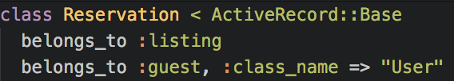
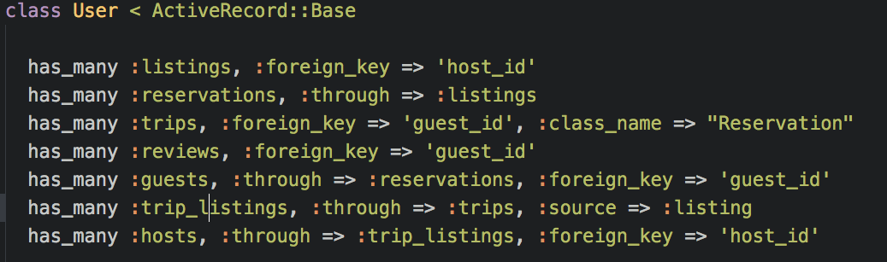

It was that time in the curriculum. I had forked one of the most dreaded labs, known to give programmers nightmares and emotional breakdowns. I can’t say I wasn’t warned when I decided to clone the repository and open up the monster on atom. By now you may know what I’m talking about. Yup, you’re right. It’s the lab that must never be mentioned. Flatiron…B…N….B……Methods……
Besides for the fact that the lab has 68 tests, which is very satisfying to see when all of them pass (yes I even recorded a video of it), the lab challenged us on implementing ActiveRecord Associations.
I love abstract logic. I guess since I was introduced to programming through C++, making up complex logic that magically works is something I enjoy.
Let’s say you have a model called Listing.
It belongs to another model called city, and another model called neighborhood. It contains many models called reservation
Listing - > City
Listing - > Neighborhood
Listing < - Reservations
Simple enough?
Now the fun begins:

In this scenario, a User can be both a guest or a host. But there is no guest or host table. In order for this to work, we do something like this in the table we want to make the association with (in this case, the Listings table):

Listing will know that host isn’t another physically existing table, but actually the user table. Now User can act as both a user, and a host. Let’s take this a step further:

Reservation will know that guest isn’t another physically existing table, but actually the user table. Now User can act as a user, a host, and a guest.
But now before we pride ourselves as the masters of associations, there’s another neat feature we need to learn from the User table:

Notice in line 3, the User has many trips, but there’s no trips table. The User is keeping track of all the times it was a guest at another User’s home. That list of “Trips”, is found by looking into the reservations table and finding every time this user was a guest.
Also in the second to last line, you’ll notice Users has any trip listings. Again there’s no trip listing table, but the User is able to keep track of every “rental” another User rented from this User. It can be found by going into the abstract table created above called “trips”, and find every time this user was a host.
If this wasn’t crazy enough, this user can track all of the hosts it ever had, by once again going through the trip listings table created above, and tracking the hosts of all it’s trips, using the host_id.
If your brain didn’t just go “Blah”, then we need to get in touch!